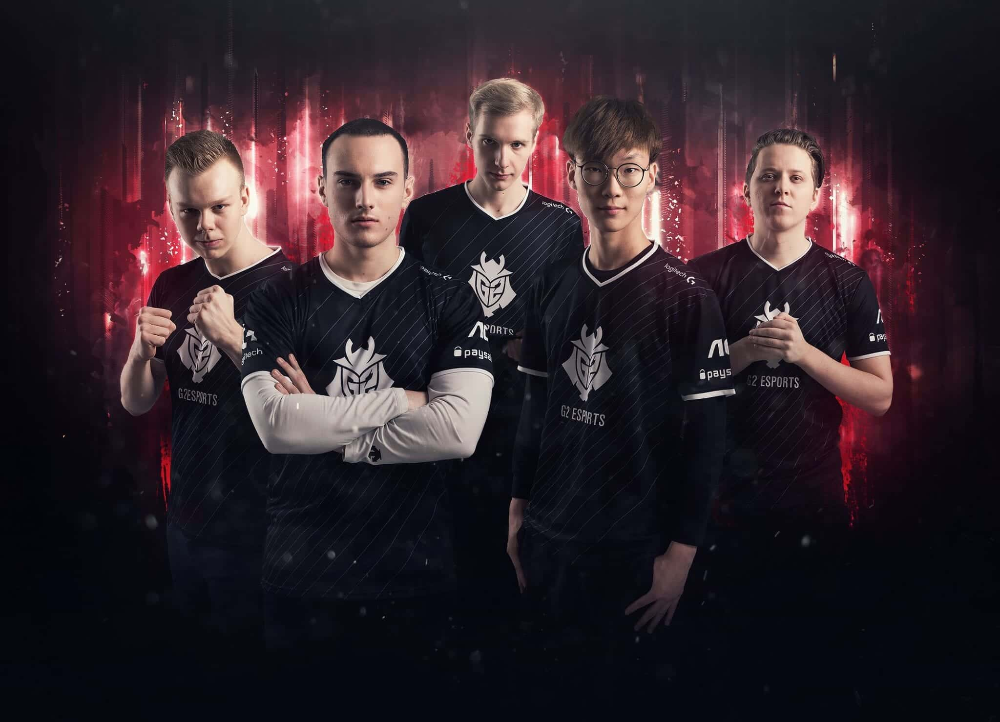
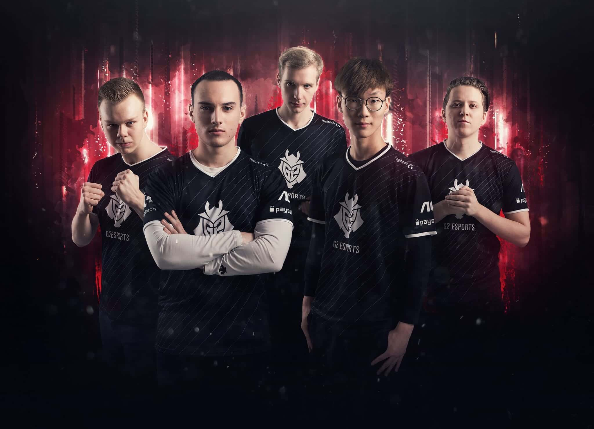

About
Europe's most successful LoL team, G2 Esports is known for their bold plays and unique approach to the game. They combine Western creativity with world-class mechanics, resulting in an unpredictable and entertaining style that keeps both fans and opponents on edge. Famous for pulling off unconventional strategies against even the most favored opponents, G2’s confidence and adaptability make them Europe’s consistent international representatives. Whether it’s the infamous "meme picks" or perfect teamfighting, G2 always keeps their enemies guessing, and their ability to perform under pressure has made them one of the most exciting teams to watch in the League of Legends scene.
History
G2 Esports has dominated the LEC with their fearless style and innovative strategies. With a MSI 2019 title and multiple European championships, they continue to set the standard for Western teams. Their confidence and flair have made them international fan-favorites and perennial threats. From early upsets to world-class performances, G2 has proven time and time again that they are a force to be reckoned with. Their influence on Western LoL has reshaped the way teams approach international competition, constantly pushing the boundaries of what’s possible.
 
